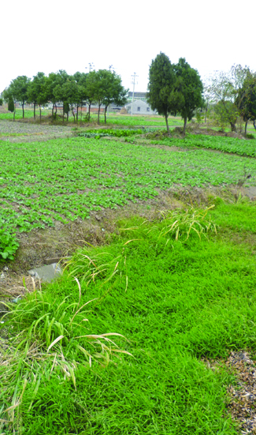

嘉兴市文物保护网 · 市级文物保护单位 · 2014-06-13 · 原文

陆家坟遗址位于嘉兴市南湖区新丰镇横港村塔西组，东、西、南三面环河，占地面积37500平方米，高墩高3米左右，系新石器时代良渚文化至春秋战国时期的聚落址。曾进行过抢救性的发掘，挖探沟二条，发现文化层分上下二层，出土的陶片较多，此外还有少量铜器。2008年曾被盗掘，村民向新丰派出所报警。该遗址规模较大，延续时间长，有较高的历史和科学价值。1981年公布为嘉兴市级文物保护单位。